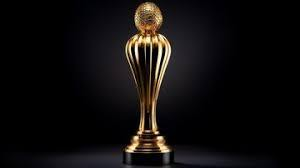

O que é o Xadrez?
O xadrez é um jogo de estratégia disputado entre dois jogadores. Cada participante controla um conjunto de peças com o objetivo de dar xeque-mate no rei adversário.
Como funcionam os torneios
- Os jogadores competem em várias rodadas
- Cada partida tem tempo controlado por relógio
- As vitórias valem pontos
- O jogador com maior pontuação vence o torneio
Tipos de partidas
- Clássico: partidas longas e estratégicas
- Rápido: tempo reduzido
- Blitz: partidas muito rápidas
Peças do Xadrez
- Rei
- Rainha
- Torre
- Bispo
- Cavalo
- Peão
Principais torneios
| Torneio | Local | Importância |
|---|---|---|
| Campeonato Mundial | Internacional | Maior título do xadrez |
| Torneio de Candidatos | Internacional | Define o desafiante ao título mundial |
| Olimpíada de Xadrez | Mundial | Competição entre países |
Importância do Xadrez
O xadrez desenvolve habilidades como raciocínio lógico, concentração, memória e tomada de decisões. Por isso, é muito utilizado também como ferramenta educacional.
Curiosidades
- O xadrez surgiu há mais de 1.500 anos
- Existem campeões mundiais famosos na história
- É considerado um esporte mental
Galeria


